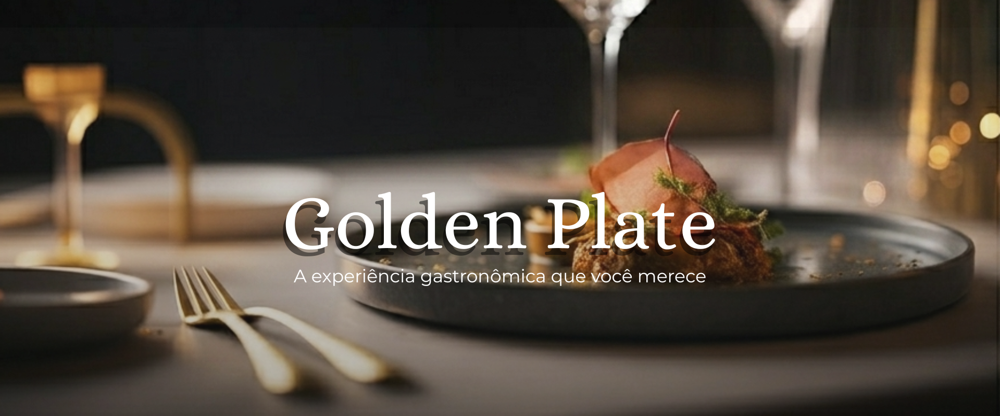

O Golden Plate é um restaurante pensado para oferecer uma experiência gastronômica única, combinando sabores sofisticados com um ambiente elegante e acolhedor. Desde o momento em que o cliente entra, cada detalhe foi cuidadosamente planejado para proporcionar conforto e prazer. A decoração moderna se une à iluminação suave, criando um espaço perfeito tanto para encontros especiais quanto para momentos de lazer. Nosso compromisso é transformar cada visita em uma memória inesquecível.
Nossa culinária é inspirada em diferentes culturas ao redor do mundo, trazendo uma variedade de pratos que agradam todos os paladares. Utilizamos ingredientes frescos e selecionados diariamente, garantindo qualidade e sabor em cada refeição servida. Os chefs do Golden Plate trabalham com paixão e criatividade, criando combinações únicas que surpreendem nossos clientes. Aqui, cada prato é preparado com dedicação e atenção aos mínimos detalhes.Além da excelência na comida, o Golden Plate também se destaca pelo atendimento diferenciado. Nossa equipe é treinada para oferecer um serviço ágil, educado e eficiente, sempre buscando atender às necessidades dos clientes da melhor forma possível. Acreditamos que um bom atendimento faz toda a diferença na experiência do cliente, por isso valorizamos cada interação. Nosso objetivo é fazer com que todos se sintam especiais e bem-vindos.
O Golden Plate também é o lugar ideal para celebrar momentos importantes, como aniversários, encontros românticos e reuniões entre amigos. Oferecemos um ambiente versátil que se adapta a diferentes ocasiões, sempre mantendo o padrão de qualidade que nos define. Com um cardápio variado e opções exclusivas, garantimos uma experiência completa para todos os visitantes. Venha conhecer e descubra por que somos referência em gastronomia.